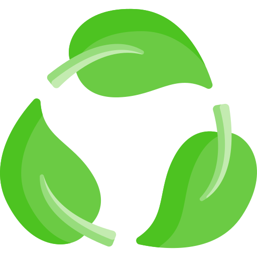
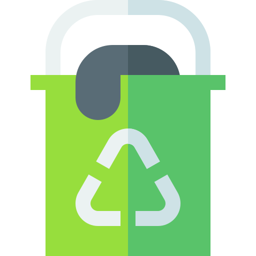

Know Your Waste
Know Your Waste
Segregate smartly. Small steps make a big difference!

Recyclable
Paper, plastic, glass — keep them clean and dry for reuse.

Organic
Food leftovers and garden waste — perfect for composting.

Hazardous
Batteries, e-waste, and chemicals — handle carefully.